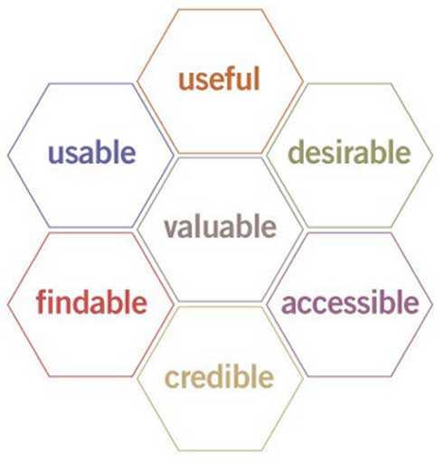

User Interface
 Interface Design
Interface Design8 Golden Rules
Fonts
Color
Sound
Accessibility
Mobile Devices
Native Apps
Google Analytics
Interface Examples
Interface Design
Usability.gov, a resource for best practices and guidelines for user experience, summarizes user interface design as follows:
User Interface (UI) Design focuses on anticipating what users might need to do and ensuring that the interface has elements that are easy to access, understand, and use to facilitate those actions. UI brings together concepts from interaction design, visual design, and information architecture.
What is the most important piece of the puzzle to understand? The user. Knowing who your users are and what they are looking for is the most obvious, and crucial, requirement for designing a good user interface which has high usability. What does that meaan?
Effectiveness, Efficiency and Satisfaction
The international standard, ISO 9241-11 provides the following definition of usability:
The extent to which a product can be used by specified users to achieve specified goals with effectiveness, efficiency and satisfaction in a specified context of use.
- Effectiveness: The degree to which the design is successful in providing the user with the desired result
- Efficiency: Once used have learned the design, how quickly can they perform tasks?
- Satisfaction: How pleasant is it to use the design?
Further information on usability can be on Wikipedia's page on usability.
User Experience Basics
Central to the above specification is the concept that good design tries to identify users' needs in order to satisfy them. To that end, there are a number of facets of any user interface that help to achieve that goal. The following is one way to represent those, created by Peter Morville and explained here. We include a brief description for the reader's convenience:

- Useful: Your content should be original and fulfill a need
- Usable: Site must be easy to use
- Desirable: Image, identity, brand, and other design elements are used to evoke emotion and appreciation
- Findable: Content needs to be navigable and locatable onsite and offsite
- Accessible: Content needs to be accessible to people with disabilities
- Credible: Users must trust and believe what you tell them
A great user interface can be designed by fulfilling these facets to varying degrees based on the context of the interface, as we shall see next.
User Interface Design Basics
Interface Elements
The key to selecting interface elements is to understand that users have a wealth of experience and familiarity with elements that behave a certain way already. Unless there is a good reason to deviate from the norm, staying consistent with that familiarity is a wise decision.
Examples of elements that users generally have experience with include input controls (buttons, text fields, dropdown lists, etc.), navigational components (sliders, search fields, etc.) and informational components (tooltips, icons, progress bars, etc.). Consistent use of these elements where appropriate will go a long way toward good design.
Best Practices
The following list is drawn directly from the information at usability.gov.
- Keep the interface SIMPLE. The interface should be a tool to experience content, not the focus.
- Create consistency and use common UI elements. Consistency and commonality foster a comfortable environment for the user as well as create a uniform experience throughout the content.
- Be purposeful in page layout. Paying careful attention to the spatial relationships between elements can aid navigation and readability. This item is of particular importance when the content is accessible from different devices, with different spatial requirements.
- Strategically use color and texture. Colors and textures help to direct or redirect the user's attention.
- Use typography to create hierarchy and clarity. Different sizes, fonts, and arrangement of the text help increase readability.
- Communicate! Always inform users of location, actions, changes in state, or errors with feedback.
- Think about the defaults. By carefully thinking about and anticipating the goals people bring to your site, you can create defaults that reduce the burden on the user.